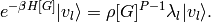

Graph evaluation¶
There are two approaches to evaluating the weight and energy contribution
of a given graph: either by diagonalising the  matrix of
the graph or by diagonalising the Hamiltonian matrix of the graph.
matrix of
the graph or by diagonalising the Hamiltonian matrix of the graph.
RHODIAG¶
Diagonalisation of the matrix is referred to as RHODIAG
in the input documentation.
The matrix of the graph is the evaluation of the
high-temperature thermal density operator on the space of Slater
determinants spanned by the graph, or more formally:
![\rho[G] = \sum_{\veci\vecj \in G} |D_\veci \ket \rho_{\veci\vecj}\bra D_\vecj|](../_images/math/bc7c6b9d1f64112bc0d9434034151c18f1b7e1c3.png)
We can obtain the eigenvectors and -values,  and
and
 of
of ![\rho[G]](../_images/math/1cacaf37c332d793e9a385d537dcce5bea4c45aa.png) via matrix diagonalisation, and can
then use them to evaluate the weight of the graph:
via matrix diagonalisation, and can
then use them to evaluate the weight of the graph:
![w_{\veci}[G] & = \bra D_{\veci} | e^{-\beta H[G]} | D_{\veci} \ket \\
& = \sum_{kl} \bra D_{\veci} | v_k \ket \bra v_k | e^{-\beta H[G]} | v_l \ket \bra v_l | D_{\veci} \ket \\
& = \sum_{kl} \bra D_{\veci} | v_k \ket \bra v_k | \lambda_l^P | v_l \ket \bra v_l | D_{\veci} \ket \\
& = \sum_{kl} \bra D_{\veci} | v_k \ket \lambda_l^P \delta_{kl} \bra v_l | D_{\veci} \ket \\
& = \sum_k \lambda_k^P \bra D_{\veci} | v_k \ket \bra v_k | D_{\veci} \ket](../_images/math/51f0cfffce34ec59fb6ccc6c6f2eabd9d82e32a3.png)
where we have applied the identity operator,  twice and used:
twice and used:

In a similar fashion, the energy contribution,  can be evaluated:
can be evaluated:
![w_{\veci}\tilde{E}_{\veci} & = \bra D_{\veci} | H e^{-\beta H[G]} | D_{\veci} \ket \\
& = \sum_{\vecj \in G} \bra D_{\veci} | H | D_{\vecj} \ket \bra D_{\vecj} | e^{-\beta H[G]} | D_{\veci} \ket \\
& = \sum_{\vecj \in G} \sum_{kl} \bra D_{\veci} | H | D_{\vecj} \ket \bra D_{\vecj} | v_k \ket \bra v_k | e^{-\beta H[G]} | v_l \ket \bra v_l | D_{\veci} \ket \\
& = \sum_{\vecj \in G} \sum_{kl} \bra D_{\veci} | H | D_{\vecj} \ket \bra D_{\vecj} | v_k \ket \lambda_l^P \delta_{kl} \bra v_l | D_{\veci} \ket \\
& = \sum_{\vecj \in G} \sum_{k} \bra D_{\veci} | H | D_{\vecj} \ket \lambda_k^P \bra D_{\vecj} | v_k \ket \bra v_k | D_{\veci} \ket](../_images/math/6465340762493c70241c42084aac1cd65ad2b937.png)
The matrix elements can be evaluated using a Taylor expansion
with or without a Trotter approximation to improve the accuracy of the expansion.
HDIAG¶
Alternatively, we can use a slightly simpler approach which avoids having to evaluate
matrix by dealing with the Hamiltonian matrix directly. This method is referred
to as HDIAG in the input documentation. The two approaches give
essentially the same result. In an analogous fashion to the application
of the  matrix in the space of the graph, we consider the Hamiltonian to be a propogator
acting in the space of the graph:
matrix in the space of the graph, we consider the Hamiltonian to be a propogator
acting in the space of the graph:
![H[G] = \sum_{\veci\vecj \in G} |D_\veci \ket H_{\veci\vecj}\bra D_\vecj|](../_images/math/e7be14b4392c85ceef0b03d9c026219da15eed51.png)
We can evaluate use this to evaluate the weight of the graph:
![w_{\veci}[G] & = \bra D_{\veci} | e^{-\beta H[G]} | D_{\veci} \ket \\
& = \sum_{kl} \bra D_{\veci} | v_k \ket \bra v_k | 1 - \beta H[G] + \frac{\beta^2 H[G]^2}{2!} - \frac{\beta^3 H[G]^3}{3!} + \cdots | v_l \ket \bra v_l | D_{\veci} \ket \\
& = \sum_{kl} \bra D_{\veci} | v_k \ket (1 - \beta\lambda_l + \frac{\beta^2\lambda_l^2}{2!} - \frac{\beta^3\lambda_l^3}{3!} + \cdots) \delta_{kl} \bra v_l | D_{\veci} \ket \\
& = \sum_k e^{-\beta\lambda_k} \bra D_{\veci} | v_k \ket \bra v_k | D_{\veci} \ket](../_images/math/4ecb6e23bc7418eb900062c53bec4aef268a277d.png)
where now and are eigenvectors and
-values of the Hamiltonian matrix in the space of the graph.
Similarly, we can obtain the energy contribution of the graph:
![w_{\veci}\tilde{E}_{\veci} & = \bra D_{\veci} | H e^{-\beta H[G]} | D_{\veci} \ket \\
& = \sum_{\vecj \in G} \bra D_{\veci} | H | D_{\vecj} \ket \bra D_{\vecj} | e^{-\beta H[G]} | D_{\veci} \ket \\
& = \sum_{\vecj \in G} \sum_{kl} \bra D_{\veci} | H | D_{\vecj} \ket \bra D_{\vecj} | v_k \ket \bra v_k | 1 - \beta H[G] + \frac{\beta^2 H[G]^2}{2!} - \frac{\beta^3 H[G]^3}{3!} + \cdots | v_l \ket \bra v_l | D_{\veci} \ket \\
& = \sum_{\vecj \in G} \sum_{kl} \bra D_{\veci} | H | D_{\vecj} \ket \bra D_{\vecj} | v_k \ket e^{-\beta\lambda_l} \delta_{kl} \bra v_l | D_{\veci} \ket \\
& = \sum_{\vecj \in G} \sum_{k} \bra D_{\veci} | H | D_{\vecj} \ket e^{-\beta\lambda_k} \bra D_{\vecj} | v_k \ket \bra v_k | D_{\veci} \ket](../_images/math/10bb988d3ed750f958dafc09088143daa164a338.png)